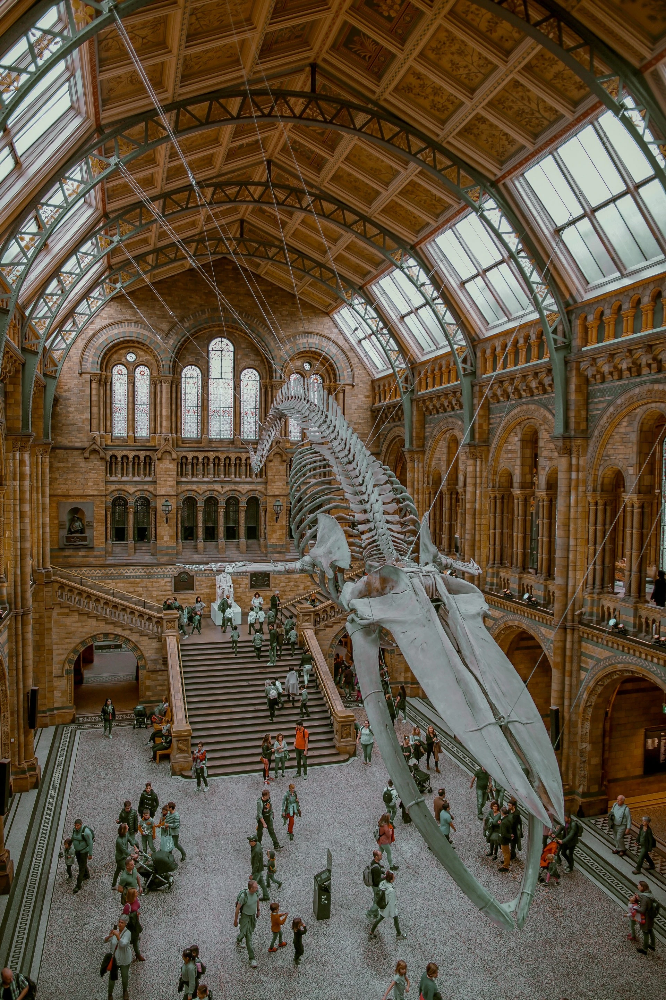

Historical Animals and Techonology

Historical Animals
The information revolution is here and robotics and artificial intelligence are the science of the future. From useful home applications of AI to industrial uses of robotics, the future is here. You can even say hello and shake the hand of Rob the Robot.
Techonology
For many people their life expectancy is much longer and their quality of life much improved, thanks to the growth of our understanding of medicine. Over a series of exhibits we explore the history of medicine and take a look at some major breakthroughs including the discovery of penicillin and the first heart transplant.